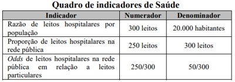
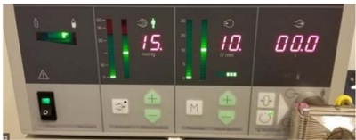
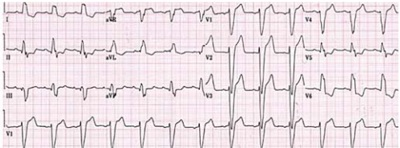
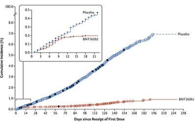
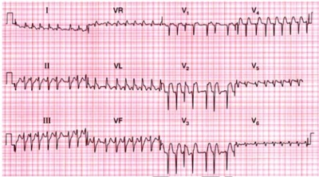

Questão 1 · Planejamento f amiliar · 4000169016Considerando a melhor escolha para os métodos contraceptivos, assinale a alternativa correta.
A Anticoncepcional oral combinado não deve ser prescrito para paciente jovem de 20 anos de idade, sem patologias prévias
B Anel contraceptivo é uma boa opção para paciente sem patologias, que esquece de tomar medicações e que tem queixa de sangramento de escape.
C Dispositivo intrauterino é contraindicado em pacientes sem filhos.
D Os dispositivos intrauterinos estão contraindicados para pacientes com enxaqueca com aura.
E Tabagistas que têm mais de 35 anos de idade não apresentam contraindicações nem maiores riscos com as pílulas combinadas com etinilestradiol segundo evidências recentes.
Questão 2 · Medicina Preventiva · 4000169015Considerando que a Política Nacional de Educação Permanente em Saúde (PNEPS), instituída no ano de 2004, representa um marco para a formação e trabalho em saúde no País, assinale a alternativa correta.
A A Política Nacional de Educação Permanente em Saúde estabelece a carga horária de duas horas, quinzenalmente, para atividades formativas, com o, propósito de promover a transformação das práticas do trabalho em saúde.
B A Política Nacional de Educação Permanente em Saúde estabelece a carga horária de duas horas, quinzenalmente, para atividades formativas exclusivamente para médicos, com o propósito de promover a transformação das práticas do trabalho em saúde.
C Conforme a Lei nº 13.595/2018, que altera o exercício profissional dos Agentes Comunitários de Saúde e Agentes de Combate às Endemias, é vetado a estes profissionais a realização de ações de educação popular em saúde.
D O Programa Saúde com Agente é uma iniciativa do Governo Federal que passa a exigir a realização de um curso de atualização de 120 horas para os Agentes Comunitários de Saúde a partir de 2022.
E O Programa Saúde com Agente irá prover a formação técnica dos Agentes Comunitários de Saúde e Agentes de Combate às Endemias em todo o País.
Questão 3 · Medicina Preventiva · 4000169014Considerando a estrutura e a organização das ações e serviços do Sistema Único de Saúde (SUS) e os Programas de Saúde, assinale a alternativa correta.
A O Programa Previne Brasil altera as formas de repasse das transferências para os municípios, que passam a ser distribuídas com base somente em dois critérios: capitação ponderada e pagamento por desempenho.
B O Programa Previne Brasil estabelece a obrigatoriedade de contratação de gerentes para as unidades de saúde.
C O Programa Saúde na Hora possibilita a oferta de ações de saúde em horários mais flexíveis para a população.
D O Programa Mais Médicos realiza o provimento emergencial de profissionais médicos somente em cidades brasileiras que tenham Distritos Sanitários Especiais Indígenas.
E A Carteira de Serviços da Atenção Primária proíbe a realização de cantoplastia na Atenção Primária.
Questão 4 · Medicina Preventiva · 4000169013No que se refere à legislação do Sistema Único de Saúde (SUS), assinale a alternativa correta.
A A Lei Federal nº 8.142/1990 define que o Conselho de Saúde é uma instância colegiada de caráter consultivo, cuja principal função é auxiliar o gestor na formulação de políticas públicas.
B A Lei Federal nº 8.142/1990 define que a Conferência de Saúde é uma instância colegiada do SUS, com periodicidade bienal no âmbito municipal.
C A Lei Federal nº 13.097/2015 proíbe a participação de capital estrangeiro na assistência direta à saúde em ações de reprodução assistida.
D A Lei Federal nº 8.080/1990 prevê a criação de Comissões Permanentes de integração entre os serviços de saúde e as instituições de ensino profissional e superior.
E A Lei Federal nº 11.108/2005 permite a presença, junto à parturiente, de um acompanhante durante todo o período de trabalho de parto, parto e pós-parto imediato, exclusivamente para menores de idade.
Questão 5 · Medicina Preventiva · 4000169012Em relação aos aspectos organizativos e de gestão do Sistema Único de Saúde (SUS), assinale a alternativa correta.
A O Plano Plurianual (PPA) constitui um dos documentos de planejamento das políticas da Administração Pública Federal para a área da saúde, previsto na Constituição Federal de 1988.
B O art. 15 da Lei nº 8.080/1990 faculta aos municípios com menos de 3.500 habitantes a elaboração do Plano Municipal de Saúde.
C O art. 8 da Lei nº 8.080/1990 proíbe a participação da iniciativa privada nas ações e serviços de saúde ofertados de forma regionalizada.
D O art. 15 da Lei n- 8.080/1990 faculta aos municípios com menos de 3.500 habitantes a elaboração do Relatório Anual de Gestão (RGA).
E O art. 8 da Lei n- 8.080/1990 determina que a Programação Anual de Saúde (PAS) é o único documento de gestão do SUS para o qual não há obrigatoriedade de aprovação por Conselho de Saúde.
Questão 6 · Medicina Preventiva · 4000169011Segundo a Organização Mundial da Saúde, os indicadores de saúde são definidos como medidas-síntese que contêm informação relevante acerca de determinados atributos e dimensões do estado de saúde, bem como do desempenho de um sistema de saúde. Adaptado de Organização Pan-Americana de Saúde. Indicadores de Saúde - Elementos conceituais e práticos. 2018. Assinale a alternativa correta, considerando o quadro de indicadores de saúde apresentados, com seus respectivos numeradores e denominadores.

A A taxa de leitos hospitalares é 550 por 100 000 (cem mil) habitantes.
B A taxa de leitos hospitalares é 300 por 100.000 (cem mil) habitantes.
C A razão de leitos hospitalares por população é 15 leitos por 1.000 (um mil habitantes).
D O
E A razão de leitos hospitalares por população é 1,5 leito por 100.000 (cem mil) habitantes.
Questão 7 · Medicina Preventiva · 4000169010A proximidade das Unidades Básicas de Saúde (UBS) dos domicílios das pessoas e seus ambientes de trabalho, o alto grau de descentralização e capilaridade da Atenção Básica no Brasil, em articulação com a Rede Nacional de Atenção Integral à Saúde do (a) Trabalhador (a) e as demais Redes de Atenção à Saúde, favorecem a garantia de acesso a uma atenção à saúde de qualidade para a população trabalhadora. Quanto às disposições do Caderno de Atenção Básica, nº 41 - Saúde do Trabalhador e da Trabalhadora, assinale a alternativa correta.
A Todo (a) trabalhador (a) exposto à poeira de sílica e (ou) portador (a) de silicose deve realizar propedêutica para investigação de tuberculose.
B Considerando a relação do trabalho com o adoecimento de trabalhadores (as), segundo a Classificação de Schilling, o trabalho é um fator contributivo, mas não necessário para a asbestose.
C Considerando a relação do trabalho com o adoecimento de trabalhadores (as), segundo a Classificação de Schilling, o trabalho é um fator contributivo, mas não necessário para a silicose.
D A emissão da Comunicação de Acidente de Trabalho (CAT) é de responsabilidade da empresa contratante, sendo vetada a sua emissão pelos profissionais dos serviços de saúde da Atenção Básica.
E Segundo a Lista Brasileira de Doenças Relacionadas ao Trabalho, a fibromatose da fáscia palmar constitui uma doença osteomuscular cujo exame padrão-ouro para o diagnóstico consiste na ressonância magnética.
Questão 8 · Calendário inf antil · 4000169009As visitas domiciliares são atividades que permitem o acompanhamento da condição de saúde de grupos específicos indivíduos e famílias em condições de vulnerabilidade social. Considerando uma visita domiciliar para uma família com um recém-nascido de sete dias e com base nas condutas e suas fundamentações, assinale a alternativa correta.
A Verificar se foi realizada a administração da vacina da poliomielite 1 e 3 (VOP atenuada) cuja via de administração é oral, com recomendação ao nascer e aos 24 meses de vida e 36 meses de vida.
B Ao diagnosticar a ocorrência de linfadenopatia regional não supurada, um evento adverso raro e grave da vacina da BCG, a conduta consiste no encaminhamento para punção, na unidade de saúde, para evitar supuração.
C Verificar se foi realizada a administração da vacina BCG, cuja via de administração é intradérmica, cuja idade recomendada é ao nascer, com dose de reforço aos 6 meses de vida.
D Ao diagnosticar a ocorrência de reação lupoide, um evento adverso raro e grave da vacina da BCG, a conduta consiste na prescrição de metronidazol associado à rifampicina e etambutol por 14 dias.
E Verificar se foi realizada a administração da vacina da hepatite B, cuja via de administração é intramuscular, com recomendação ao nascer.
Questão 9 · Medicina Preventiva · 4000169008Os medicamentos são a intervenção terapêutica mais utilizada e constituem uma tecnologia que exerce alto impacto sobre os gastos em saúde. Portanto, é fundamental ao Sistema Único de Saúde (SUS) que o processo de sua incorporação esteja embasado em critérios que possibilitem à população o acesso a medicamentos mais seguros, e cazes e custo-efetivos, para atendimento aos principais problemas de saúde dos cidadãos brasileiros. Disponível em: <artigo.saude.gov.br/saude-de-a-z/rename>. Acesso em: 30 nov. 2021. Considerando a Relação Nacional de Medicamentos Essenciais (Rename) e a necessidade de noti cação de suspeita de eventos adversos aos medicamentos, assinale a alternativa correta
A A Relação Nacional de Medicamentos Essenciais é dividida em dois eixos - Medicamentos do Componente Básico e Medicamentos do Componente Especializado.
B O VigMed considera a ausência ou redução do efeito esperado (inefetividade terapêutica) como um evento adverso.
C Ácido valproico (valproato de sódio) 250 mg comprimido, faz parte do componente especializado.
D O VigiMed é o sistema disponibilizado pela Anvisa, exclusivamente para profissionais de saúde cadastrados relatarem as suspeitas de eventos adversos aos medicamentos.
E Acetato de medroxiprogesterona 150 mg/mL, em suspensão injetável, faz parte do componente especializado.
Questão 10 · Inf ectologia · Prof ilaxia préexposição PrEP · 4000169007Conforme o Ministério da Saúde, nos últimos anos, alguns municípios brasileiros vêm conseguindo obter melhoria na atenção às pessoas que vivem com HIV/Aids a começar pela implantação de um novo modelo assistencial com ações de atenção à saúde que respeitem as particularidades desse grupo, incluindo o manejo da infecção, estruturadas a partir das realidades locais dos sistemas de saúde. Em relação ao HIV/Aids, assinale a alternativa correta.
A De 2009 a 2019 a Região Sudeste apresentou as maiores taxas de detecção de HIV em gestantes no País.
B Conforme estratificação de risco, a atual recomendação do Ministério da Saúde é que todas as pessoas diagnosticadas com HIV sejam atendidas na Atenção Básica, ficando restrito aos Serviços de Atenção especializada o atendimento aos usuários em Profilaxia Pós-Exposição de Risco (PEP) e Profilaxia Pré-Exposição ao HIV (Prep).
C A Profilaxia Pós-Exposição de Risco deve ser realizada por 72 dias após relação sexual desprotegida.
D A Profilaxia Pós-Exposição de Risco deve ser realizada por 28 dias após acidente ocupacional.
E A Profilaxia Pré-Exposição ao HIV (Prep) deve ser ofertada exclusivamente a pessoas que realizam a prática de sexo anal.
Questão 11 · Medicina Preventiva · 4000169006O Plano Estadual de Saúde (PES) é o principal instrumento de planejamento da gestão estadual do Sistema Único de Saúde (SUS) e tem como objetivo orientar as políticas públicas. A partir da análise situacional do território, de forma regionalizada, são definidas diretrizes, objetivos e metas a serem alcançados. A respeito do Plano Estadual de Saúde do estado de São Paulo, assinale a alternativa correta.
A A cobertura da população residente que é beneficiária de planos de saúde de assistência médica varia de 10% a 20% nas regiões de saúde do estado de São Paulo.
B Em relação ao percentual de internações por capítulos da classificação internacional de doenças (CID 10) segundo faixa etária, as doenças do aparelho respiratório são as mais frequentes na faixa etária de 0 a 19 anos de idade.
C A Esperança de Vida ao Nascer no Estado de São Paulo é maior para o sexo masculino que para o sexo feminino.
D A taxa de fecundidade total (o número médio de filhos de uma mulher) no estado de São Paulo é superior à taxa de fecundidade total no Brasil.
E Em relação ao percentual de internações por capítulos da classificação internacional de doenças (CID 10) segundo faixa etária, as Neoplasias são as mais frequentes na faixa etária de 20 anos de idade a 59 anos de idade.
Questão 12 · Vacinas · 4000169005Acerca da vacina contra o papiloma vírus humano (HPV) é correto afirmar que
A apenas pacientes virgens devem ser vacinadas.
B para homens pode ser feita, segundo a bula, até os 42 anos de idade.
C recentemente foi liberada pelo Sistema Único de Saúde (SUS) para imunocomprometidas até os 45 anos de idade.
D para mulheres, segundo a bula, pode ser feita até os 52 anos de idade.
E a idade de início para meninas no SUS é de 7 anos de idade.
Questão 13 · Interpretação e conduta f rente as atipias citológicas · 4000169004Uma paciente de 32 anos de idade, com diagnóstico anatomopatológico de lesão intraepitelial de alto grau. Nesse caso, qual a melhor conduta terapêutica?
A As lesões de alto grau de colo uterino são sempre tratadas com conização e lâmina fria.
B A conduta deve ser expectante pela idade da paciente.
C Indicar histerectomia.
D A cauterização química com ácido tricloroacético.
E A conização que pode ser a frio ou com alça de alta frequência.
Questão 14 · Ginecologia · Síf ilis · 4000169003Uma paciente sexualmente ativa, com parceiro sexual novo apresenta uma úlcera vulvar indolor de início recente. Com base no exposto, deve-se pensar em
A herpes genital, que é a causa mais comum de úlcera vulvar, e iniciar com aciclovir.
B sífilis, já que a úlcera é indolor e há história de parceiro recente, e deve-se prescrever penicilina benzatina.
C donovanose, já que sua prevalência vem aumentando recentemente, e deve-se prescrever nitrofurantoína 1 g dose única.
D infecção por clamidia, que apresenta esse quadro como infecção primária usualmente e deve-se prescrever ampicilina.
E herpes genital, que é a causa mais frequente de úlcera vulvar e deve-se prescrever ceftriaxona.
Questão 15 · Inf ectologia · Inf ecção do trato urinário ITU · 4000169002Uma paciente apresenta um quadro típico de infecção urinária com ardência ao urinar, aumento da frequência (urina várias vezes ao dia em pequenas quantidades), alteração da cor e do cheiro da urina. No que se refere à melhor conduta segundo o último consenso de tratamento, assinale a alternativa correta.
A Prescrever quinolona como norfloxacino de 12/12h, por sete dias.
B Não se pode iniciar medicação e sempre pedir exames comuns de urina e de urocultura antes.
C A primeira escolha deve ser ampicilina 500 mg de oito em oito horas por três dias.
D Prescrever fosfomicina dose única já que a paciente não relata dor lombar e nem febre.
E Prescrever penicilina injetável ou ceftriaxona em dose única.
Questão 16 · Ginecologia · Urogenitais · Terapia hormonal · 4000169001Em relação à síndrome geniturinária da menopausa, assinale a alternativa correta.
A Afeta menos de 20% das mulheres na menopausa.
B Tem impacto significativo na vida sexual, porém não costuma interferir nos outros aspectos da vida da mulher.
C O pH vaginal diminui.
D Resulta da progressiva diminuição de estrogênio e androgênios na menopausa.
E Como os calorões, os sintomas costumam diminuir com o passar do tempo.
Questão 17 · Assistencia ao parto pélvico · Obstetrícia · 4000169000Uma paciente gesta 4 e para 3 chegou à maternidade com gestação a termo, pré-natal normal e em franco trabalho de parto. Ao exame de toque, o obstetra de plantão percebeu dilatação de 5 cm, colo médio e bolsa íntegra, mas não evidencia partes fetais. Ao solicitar ecogra a obstétrica de urgência foi informado pelo médico ecogra sta que o bebê está em apresentação pélvica. Acerca da melhor conduta para essa paciente, assinale a alternativa correta.
A Prosseguir com o parto vaginal, já que a paciente tem 3 partos prévios.
B Liberar a paciente para casa e pedir que retome no outro dia em jejum.
C Orientar a paciente e indicar cesárea.
D Tentar a versão externa e prosseguir com parto vaginal.
E Iniciar com ocitocina em dose plena.
Questão 18 · Rotura prematura de membranas ovulares RPM · Obstetrícia · 4000168999Uma paciente de 28 anos de idade foi levada à maternidade por quadro de bolsa rota há 24 horas e sem evolução com trabalho de parto. Trata-se de gestante com pré-natal incompleto e idade gestacional de 33 semanas (de gestação) por ecogra a precoce, além dos antecedentes de gesta 2 e um aborto. Nesse caso, a melhor conduta para o tratamento dessa paciente é
A indicar cesárea imediatamente.
B indicar parto vaginal imediatamente e iniciar indução.
C orientar jejum de 12 horas e após isso realizar cesárea.
D avaliar sinais vitais maternos e bem-estar fetal, prescrever corticoide para amadurecimento pulmonar e adotar conduta expectante.
E prescrever antibióticos e iniciar ocitocina.
Questão 19 · Diabetes na gestação DMG · Obstetrícia · 4000168998Uma paciente em sua primeira consulta de pré-natal, com 12 semanas de idade gestacional, apresenta níveis de glicemia de jejum de 92 pelos parâmetros atuais. Com relação a esse caso clínico, assinale a alternativa correta.
A Considerar diabetes gestacional e encaminhar para avaliação e controle nutricional.
B Deve-se iniciar tratamento imediato com insulina e metformina.
C Deve-se iniciar tratamento com metformina e glibenclamida, já que está confirmada a alteração e gestante sempre necessita de tratamento visando proteção do feto.
D Como dieta e atividade física melhoram muito pouco o quadro glicêmico na gestação, o obstetra está autorizado a não recomendar esse procedimento e partir direto para medicação e encaminhamento para endocrinologista.
E Pedir imediatamente teste de tolerância à glicose e à lactose, insulinemia, hemoglobina glicosilada e iniciar glibenclamida.
Questão 20 · Doenças inf ecciosas na gestação HIV síf ilis hepatites herpes · Obstetrícia · 4000168997A sí lis congênita é de noti cação compulsória no Brasil. Considerando-se o aumento na detecção de sí lis em gestantes, assinale a alternativa correta.
A A triagem de sífilis deve ser feita apenas na primeira consulta de pré-natal e no início do segundo trimestre.
B O curso clínico da sífilis não é alterado pela coinfecção por HIV.
C Quando a gestante for alérgica optar por sulfametoxazol-trimetroprima.
D Se ocorrer reação de Jarisch-Herxheimer deve-se considerar que a gestante é alérgica.
E A penicilina é o tratamento de escolha da sífilis gestacional sendo inclusive recomendada dessensibilização em serviço terciário quando a gestante for alérgica.
Questão 21 · Pediatria · Exantema Súbito · 4000168996Um lactente de 1 ano de idade foi levado à consulta pela mãe, que está preocupada com umas “bolinhas” que apareceram no corpo do lho. Relata que ele fez febre alta por quatro dias e ela procurou atendimento no terceiro dia da febre, examinaram e disseram que não tinha nada alterado no exame físico. Orientaram que zesse uso de paracetamol de seis horas em seis horas caso mantivesse a febre. A febre parou, porém, surgiram pequenas maculopapulas eritematosas em tronco. Com base no exposto, esse é um caso de
A doença de Kavasaki.
B doença causada pelo parvo vírus BI 9.
C exantema súbito.
D reação alérgica ao paracetamol.
E sarampo.
Questão 22 · Inf ecção de Trato Urinário ITU · Pediatria · 4000168995Uma bebê de 8 meses de vida foi levada ao pronto atendimento por apresentar febre há mais de 72 horas. Ao exame físico, não apresentava nenhuma alteração. Foram solicitados exames de sangue e de urina. A criança foi diagnosticada com infecção de trato urinário (ITU). Em relação à ITU, assinale a alternativa correta.
A Entre os principais agentes de infecção de trato urinário estão a
B E importante aguardar o resultado da urocultura para iniciar o tratamento com antibiótico.
C Nesse caso a coleta da urina deve ser realizada por saco coletor e os leucócitos estando aumentados identifica infecção do trato urinário e o tratamento deve ser iniciado.
D Crianças menores de 1 ano de idade devem ser tratadas com antibiótico endovenoso.
E Na infecção de trato urinário febril, o tratamento deve se de sete dias.
Questão 23 · Bronquiolite · Pediatria · 4000168994Quanto à bronquiolite virai aguda, assinale a alternativa correta.
A Uma criança pode ter vários episódios de bronquiolite ao longo dos períodos mais frios do ano.
B O tratamento deve ser realizado com prednisolona 1mg/kg/dia.
C A frequência respiratória é um sinal importante de infecção do trato respiratório inferior.
D A oxigenioterapia é necessário sempre que a saturação estiver menor que 94% em ar ambiente.
E E necessária a realização de radiografia de tórax para confirmar o diagnóstico.
Questão 24 · Pediatria · 4000168993A respeito de saúde bucal, assinale a alternativa correta.
A Aleitamento materno em livre demanda aumenta o risco de cáries dentárias.
B A oferta de leite materno ou de fórmula no copo, apesar de estimular o desenvolvimento e a coordenação da respiração, sucção e deglutição, atrapalha o vínculo entre o cuidador e o recém- nascido.
C E importante incentivar a escovação dentária com creme dental sem flúor no primeiro ano de vida.
D Sempre que uma criança apresentar febre alta deve-se pensar em erupção dentária, além de aumento da salivação e da irritabilidade.
E O uso de chupeta não é orientado por estar associado ao desmame e à má oclusão dentária.
Questão 25 · DNPM Desenvolvimento NeuroPsicoMotor · Neurologia · 4000168992Tendo em vista a avaliação de desenvolvimento neuropsicomotor e os conhecimentos médicos correlatos, assinale a alternativa correta.
A Aos 12 meses de vida é esperado que a criança compreenda ordens e solicitações simples.
B Aos 7 meses de vida é esperado que a criança saiba rabiscar.
C Aos 9 meses de vida é esperado que a criança caminhe sem apoio.
D Aos 6 meses de vida é esperado que a criança use o movimento de pinça.
E Aos 18 meses de vida é esperado que a criança use mais de 50 palavras.
Questão 26 · Febre sem sinais localizatórios FSSL · Pediatria · 4000168991Febre com menos de uma semana de duração, que após história clínica e exame físico cuidadosos não tem a sua causa estabelecida é denominada febre sem sinais localizatórios (FSSL). No que se refere à FSSL, deve-se saber que
A em crianças menores de 30 dias de vida, com febre há 1 dia, deve-se iniciar antitérmico e orientar retomo em 24 horas para reavaliação.
B dipirona é o único antitérmico recomendado para febre em menores de 1 mês de vida.
C crianças com comprometimento do estado geral, independentemente da idade, devem ser internadas e realizar exames.
D o exame proteína C reativa deve ser solicitado nas primeiras 12 horas de febre nos casos de febre alta,
E na suspeita de infecção do trato urinário o exame padrão-ouro é o exame qualitativo de urina por cateterismo vesical.
Questão 27 · Fundamentos de oncohematologia · 4000168990Em relação aos principais sinais e sintomas de alerta para o câncer infantojuvenil, assinale a alternativa correta.
A Exantema morbiliforme que persista por mais de uma semana.
B Dores ósseas que surgem ao final do dia.
C Anemia microcítica e hipocrômica.
D Sinais precoces de puberdade.
E Ganho excessivo de peso em curto período de tempo.
Questão 28 · Avaliação do Crescimento · Pediatria · 4000168989Quanto à avaliação nutrológica em pediatria, assinale a alternativa correta.
A No primeiro trimestre espera-se um ganho de peso de 400 g/mês.
B Ao final do primeiro ano, o lactente deve ter aumentado 50% da estatura de nascimento.
C Considerando-se perímetro cefálico adequado os valores que compreendem os escores de Z -3 a +3.
D Até os 3 anos de idade deve-se aferir o comprimento com a criança em decúbito dorsal.
E Considera-se baixa estatura crianças no escore Z entre 0 e -3.
Questão 29 · Tratamento · Dermatologia · 4000168988Um paciente de 4 anos de idade foi levado a o pronto atendimento por apresentar lesões pruriginosas há um mês. Ele apresenta micropápulas eritematosas em abdome e em membros superiores. O prurido piora à noite e agora o irmão de dois anos de idade também está começando a apresentar lesões semelhantes. Considerando o caso clínico apresentado e os conhecimentos médicos correlatos, o tratamento indicado é
A corticoide tópico,
B analgésicos,
C hidratação da pele,
D antibiótico tópico,
E permetrina 5%
Questão 30 · Dermatologia · Apresentação clínica · 4000168987Um paciente de 4 anos de idade foi levado a o pronto atendimento por apresentar lesões pruriginosas há um mês. Ele apresenta micropápulas eritematosas em abdome e em membros superiores. O prurido piora à noite e agora o irmão de dois anos de idade também está começando a apresentar lesões semelhantes. Considerando o caso clínico apresentado e os conhecimentos médicos correlatos, a principal hipótese de diagnóstico é o (a)
A prurigo estrófulo.
B escabiose.
C doença mão-pé-boca,
D impetigo.
E dermatite atópica.
Questão 31 · Cirurgia · 4000168986Acerca das complicações pós-operatórias, assinale a alternativa correta
A Em quadro de diverticulite aguda, a perfuração para o retroperitônio é um evento raro, e tende a acontecer em divertículos localizados no cólon esquerdo, em função da sua anatomia retroperitoneal.
B A causa mais comum de febre no pós-operatório tardio é a atelectasia pulmonar.
C Hematoma, seroma, deiscências anastomóticas estão relacionados predominantemente a fatores locais.
D A fístula biliodigestiva é uma complicação comum da colelitíase não tratada, decorrente de uma complicação da colecistite aguda.
E A retenção urinária no pós-operatório tem menor risco de ocorrência em pacientes submetidos à raquianestesia.
Questão 32 · Cirurgia · 4000168985Em relação aos drenos, assinale a alternativa correta.
A A vantagem da utilização dos drenos à vácuo é permitir a mensuração segura do volume de drenagem, além disso eles impedem a lesão cutânea em caso de secreções irritantes. Por este motivo, drenos a vácuo são exteriorizados através da incisão cirúrgica.
B Drenos profiláticos devem ser removidos tão logo seja evidente que não há mais drenagem significativa, sem necessidade de tração progressiva. Já os drenos terapêuticos são mantidos no local enquanto drenarem quantidade significativa. Quando esta drenagem cessa ou diminui, traciona-se o dreno diariamente até que o trajeto da drenagem se feche do fundo até a superfície.
C Nas proximidades de tendões, nervos, grandes vasos, não podem ser utilizados drenos.
D Os drenos sentinelas são perianastomóticos, utilizados para identificação precoce de fístulas anastomóticas. Estes drenos são úteis nas primeiras 24 horas de pós-operatório, devendo ser retirado após este período.
E O dreno de Kehr é usado para descompressão e drenagem biliar em exploração do colédoco, coledocolitotomia, colangite ou como modelagem para reparação de estonese biliar. O dreno de Kehr deve ser tracionado gradualmente conforme sua drenagem diária for diminuindo.
Questão 33 · Cirurgia · 4000168984Na imagem apresentada, observa-se um insu ador de videolaparoscopia. A respeito do funcionamento desse equipamento e da obtenção de pneumoperitônio para videolaparoscopia, é correto afirmar que o (a)

A primeiro número do insuflador (15) refere-se à pressão do gás no sistema. Ao estabelecer o pneumoperitônio por punção com agulha de Veress, uma das maneiras de se identificar a presença intraperitoneal da agulha é a baixa pressão inicial, quando se inicia a insuflação, devendo ser esta entre 12 mmHg el5 mmHg.
B arritmia mais comum ao se realizar pneumoperitônio é a fibrilação atrial, por causa da estimulação simpática secundária à diminuição do retomo venoso.
C segundo número do insuflador (10) refere-se ao fluxo de gás no sistema. A insuflação deve ser lenta no início, entre 1 L/min e 2 L/min, a fim de evitar distensão súbita da cavidade abdominal e estimulação vagai. Após o momento inicial, o fluxo da insuflação pode ser até >10 L/min.
D último número do insuflador (00.0) refere-se ao volume total de gás utilizado, em litros. O gás preferencialmente utilizado em videolaparoscopia deve ser o ar comprimido. Não devendo ser utilizado o oxigênio (02), gás carbônico (CO2) ou nitrogênio (N2).
E técnica de Hasson consiste na obtenção do pneumoperitônio por meio da punção às cegas da cavidade abdominal com agulha de Veress.
Questão 34 · Inf ectologia · Medidas Gerais de Prevenção de Inf ecção do Sítio Cirúrgico ISC · 4000168983A respeito da prevenção de infecções de sítio cirúrgico e tendo em vista os conhecimentos médicos correlatos, assinale a alternativa correta.
A Nenhuma remoção de pelos deve ser realizada. Se for removido, com cortadores ou agente depilatório, deve ser realizada imediatamente antes da cirurgia e não no dia anterior. Lâminas não devem ser utilizadas para tricotomia.
B A hipotermia auxilia na prevenção de infecções de sítio operatório, devendo ser controlada a temperatura do paciente tanto no trans-operatório quanto no pós- operatório.
C A glicemia capilar pode interferir na prevenção de infecções do sítio operatório, entretanto não é necessário controle glicêmico no pós-operatório.
D Antibioticoprofilaxia reduz risco de infecção de sítio cirúrgico, e a dose de antibiótico deve ser administrada dentro da primeira hora de cirurgia.
E Em pacientes alérgicos a beta-lactâmicos, a profilaxia antibiótica deve ser feita com quinolonas.
Questão 35 · Cirurgia · 4000168982A respeito da anatomia vascular do abdome, assinale a alternativa correta.
A São ramos do tronco celíaco as artérias gástrica direita, hepática comum e esplénica.
B A artéria mesentérica inferior e seus ramos são responsáveis pela nutrição do íleo e do ceco.
C A artéria epigástrica inferior é ramo da artéria femoral, pois possui sua origem inferior no ligamento inguinal.
D A artéria e a veia mesentéricas superiores têm seu trajeto anterior ao pâncreas.
E A artéria gastroduodenal é ramo da artéria mesentérica superior.
Questão 36 · Cirurgia · 4000168981Quanto aos acessos centrais, é correto afirmar que
A a via preferencial de acesso central é o acesso jugular à esquerda, onde a veia jugular interna é maior e mais superficial do que o lado contralateral.
B ao se deparar com um acesso central infectado, deve-se retirá-lo e esperar 24 horas para uma nova passagem de acesso.
C acessos venosos femorais possuem maiores taxas de infecções locais, mas não de infecções de corrente circulatória.
D acessos subclávios são os que possuem maiores taxas de punção arterial e devem ser sempre evitados.
E a veia jugular interna possui trajeto mais retilíneo à direita, devendo ser acessada pelo triângulo de Sédillot, com técnica de Seldinger.
Questão 37 · Cirurgia · 4000168980No que se refere à síndrome de Mirizzi, é correto afirmar que é
A uma obstrução do dueto hepático comum por cálculo infundibular.
B uma obstrução da via biliar principal por cálculo de hepatocolédoco impactado.
C uma malformação congênita da via biliar, mais comum na infância.
D uma alteração decorrente da inflamação crônica das vias biliares e seu diagnóstico cursa com estenose do dueto hepático comum por tecido fibrocicatricial. É, geralmente, um diagnóstico transoperatório.
E geralmente, um achado radiográfico de obstrução de via biliar principal por compressão pancreática.
Questão 38 · Avaliação Inicial Vias aéreas Ventilação e Choque · Cirurgia · 4000168979Um paciente com história de atropelamento em acidente grave foi levado a o pronto-socorro. Ao exame físico, ele apresenta FC = 112 bpm, FR = 29 irpm, SatO2 = 89% e PA =100 mmHg x 75 mmHg. Ao ser questionado, apenas verbaliza sons incompreensíveis, mostra abertura ocular à dor e resposta motora de exão anormal. A ausculta respiratória denota murmúrio vesicular ausente à direita e normal à esquerda. Ao exame cardiovascular e abdominal não há demais alterações. Acerca desse caso, assinale a alternativa correta.
A O paciente está em Glasgow 8 e deve ser intubado.
B Quanto ao nível de hemorragia, no caso apresentado, pode-se classificar o choque como classe III.
C Nesse caso, está indicado o uso de ácido tranexâmico. Ele é um medicamento antifibrinolítico e deve ser aplicado de maneira tardia, 8 horas após o trauma.
D A radiografia de tórax nesse paciente se faz necessária para confirmação do diagnóstico de hemo ou pneumotórax.
E Caso o dreno de tórax esteja drenando 100 mL sero-hemático por dia, mesmo sem vazamentos e com boa expansibilidade pulmonar ao exame de raios X, não é possível retirá-lo. É preciso que a drenagem torácica seja inferior a 50 mL/dia.
Questão 39 · Cirurgia · 4000168978Acerca da incidência de hérnias é correto afirmar que
A hérnia inguinal direta (que se pronuncia medialmente aos vasos epigástricos) é a mais comum, independentemente do sexo.
B entre as mulheres, as hérnias mais comuns são as umbilicais e femorais (que se pronunciam inferiormente ao ligamento inguinal).
C as hérnias inguinais indiretas são causadas por uma fragilidade na parede posterior do canal inguinal e ocorrem mais comumente no lado esquerdo.
D o estrangulamento é a complicação grave mais comum e ocorre em 15% a 20% das hérnias.
E em homens, as hérnias indiretas são mais comuns que as hérnias diretas. Hérnias diretas são raras em mulheres.
Questão 40 · Cirurgia · 4000168977Considerando o tema apendicite aguda, o sinal ou ponto, que re ete a sugestão de um apêndice pélvico, denomina-se sinal de (do)
A Dunphy.
B Rovsing.
C Obturador.
D Jobert.
E Blumberg.
Questão 41 · Pneumologia · Epidemiologia · Neoplasia pulmonar · 4000168976Dos tumores de pulmão, o que apresenta mais incidência em não fumantes é o
A câncer de pequenas células.
B teratoma
C carcinoma de células escamosas.
D adenocarcinoma.
E carcinoma de células grandes.
Questão 42 · Tratamento da Insuf iciência cardíaca · 4000168975Um paciente com cardiomiopatia dilatada não isquêmica, apresenta piora progressiva do cansaço, sendo agora aos mínimos esforços. Ele está com tratamento otimizado da insu ciência cardíaca há pelo menos seis meses. Seu ecocardiograma apresenta fração de ejeção de 30%. Seu eletrocardiograma é apresentado a seguir. Disponível em: <https://aps.bvs.br/aps/quais-sao-as-principais-indicações-do-teste-ergometrico/>cesso em: nov. 2021 Diante desse quadro, visando melhorar os sintomas e reduzir a mortalidade desse paciente, é correto a rmar que se deve realizar

A ecocardiograma seriado para avaliar a progressão da doença.
B terapia de ressincronização cardíaca a qual está indicada para esse paciente.
C angiografia de coronárias para avaliar novamente a anatomia.
D implante de desfibrilador implantável.
E cardioversão elétrica.
Questão 43 · Tromboembolismo Pulmonar TEP · Pneumologia · Gastroenterologia · 4000168974Um paciente com história de neoplasia de pâncreas em estágio avançado, deu entrada no pronto-socorro com dispneia aguda, taquipneia FR = 32 irpm, taquicardia FC =112 bpm, hipotensão = 88 mmHg x 60 mmHg. O paciente estava afebril. Foi realizada uma angiotomografia de tórax. A respeito desse caso, assinale a alternativa correta.
A Rivaroxabana como dose inicial de 20 mg pode ser administrada via oral.
B Apixabana é contraindicada para pacientes com a suspeita clínica semelhante a desse caso.
C Pela hipotensão, o tratamento imediato é trombólise com alteplase.
D Enoxaparina intravenosa a cada 12 horas pode ser o tratamento de eleição.
E Uma angiotomografia negativa não exclui o diagnóstico.
Questão 44 · Hidrocef alia de Pressão Normal · Quadro Clínico · 4000168973Um paciente de 80 anos de idade vem apresentando perda de memória, alteração de marcha e retenção urinária. Quanto ao provável diagnóstico, assinale a alternativa correta.
A Hidrocefalia de pressão normal.
B Doença de Alzheimer.
C Paralisia supranuclear progressiva.
D Corpúsculos de Lewi.
E Demência vascular
Questão 45 · Nef rite intersticial aguda · Nef rologia · 4000168972Um paciente de 35 anos de idade vem perdendo a função renal progressivamente nos últimos dois meses. Quando foi consultar o médico nefrologista, elucidou co mo hipótese nefrite intersticial aguda (NIA). A respeito de NIA, assinale a alternativa correta.
A Rifampicina é o principal fármaco associado à NIA.
B Pacientes que apresentam vírus da Imunodeficiência humana (HIV), são naturalmente protegidos contra NIA.
C A presença de anticorpos anti-tubular
D Há associação de NIA com uveíte.
E Infecções são a causa mais prevalente de NIA.
Revisar: possível letra faltando em enunciado
Questão 46 · Inf ectologia · Leptospirose · Complicações · 4000168971Um paciente de 35 anos de idade procurou o hospital com dor em panturrilhas e febril 38,5 °C. Ao longo da evolução hospitalar, passou a apresentar icterícia, hemorragia alveolar e insu ciência renal aguda. Assinale a alternativa que comtempla o diagnóstico e o tratamento.
A Síndrome de Good Pasture - plasmaférese.
B Leptospirose - imunoglobulina.
C Doença de Churg Strauss - Prednisona.
D Síndrome de Weil - ceftriaxona.
E Hantavírus - aciclovir.
Questão 47 · Medicina Preventiva · 4000168970Um estudo foi publicado no New England Journal of Medicine, em 4 de novembro de 2021 (N Engl J Med 2021; 385:1761- 1773), mostrando informações acerca da segurança e da eficácia da vacina da Pfizer, conforme o gráfico a seguir. Com base na interpretação do gráfico, nos conhecimentos técnicos, bem como em medicina embasada em evidências, assinale a alternativa correta.

A A vacina se apresenta segura em relação a intervenção no gráfico apresentado.
B A vacina da Pfizer é uma vacina com tecnologia de DNA mensageiro.
C A separação das curvas ocorre após 42 dias de randomização.
D Trata-se de um estudo retrospectivo.
E Há proteção nas primeiras duas semanas com a primeira dose.
Questão 48 · Gastroenterologia · 4000168969Um paciente de 60 anos de idade, deu entrada no pronto-socorro com dor abdominal, náuseas e vômitos. Seu histórico médico não apresentava quaisquer informações relevantes. Foram solicitados alguns exames laboratoriais que evidenciaram uma TGO três vezes acima do valor normal, TGP dentro da faixa normal, lipase dez vezes acima do valor de referência e amilase quinze vezes acima do valor de referência. Seu leucograma, normal e sua glicemia sérica era normal (medida da glicose sérica). Em relação a esse quadro, assinale a alternativa correta.
A A dor dessa patologia costuma ser do tipo cólica.
B O paciente apresenta pelo menos dois fatores de risco pelos critérios de Ranson.
C A maior causa desses sintomas é alcoolismo.
D Deve se iniciar meropenem e hidratação via parenteral.
E O uso de ondansetrona é contraindicada.
Questão 49 · Arritmias Cardíacas · 4000168968Um paciente de 55 anos de idade, foi levado à emergência desacordado, com SatO2 = 80%, PA = 80 mmHg x 50 mmHg, ausculta pulmonar apresenta crepitantes bilaterais até ápice e a frequência cardíaca é demonstrada no eletrocardiograma a seguir. Considerando esse quadro clínico e o eletrocardiograma, assinale a alternativa correta.

A O paciente apresenta fibrilação atrial exclusivamente.
B Deve ser colocado um marcapasso.
C Apresenta-se em Killip 3.
D Abertura da artéria acometida, bem como o tratamento da arritmia subjacente são os pilares do manejo inicial.
E Ecocardiograma transtorácico e cardioversão elétrica sincronizada.
Questão 50 · Reumatologia · Artrite reumatoide AR · 4000168967Uma paciente se apresenta com dor em mãos, pés e punhos bilateralmente há dois meses, com rigidez matinal. Seu reumatologista solicita anti-CCP e fator reumatoide. Após os resultados ele inicia o tratamento com prednisona 5 mg. Acerca desse assunto, assinale a alternativa correta. Respostas: 1 12 23 34 45
A Anti CCP tem maior sensibilidade que fator reumatóide.
B O fator reumatóide deve ser realizado na metodologia de látex.
C O acometimento de punhos bilateralmente corrobora mais a favor de lúpus.
D Anti-CCP e fator reumatóide quando negativos excluem a doença.
E Prednisona é um ótimo fármaco para manutenção de tratamento.